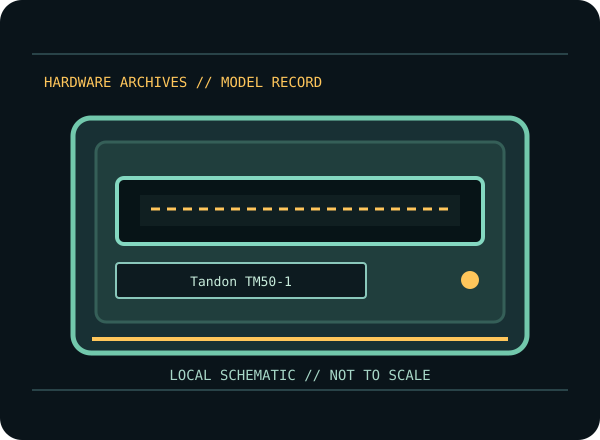

[ INDIVIDUAL COMPONENT // FLOPPY DRIVES ]
Tandon TM50-1 5.25-inch Floppy Drive
A model-specific record for an identified floppy mechanism or external floppy system. It distinguishes cited product documentation from details that depend on the unit’s full suffix, hardware revision and host configuration.

MODEL IDENTIFICATION: Tandon TM50-1. Verify the nameplate and applicable manual before connection or repair; family-level similarity does not guarantee compatible wiring, firmware, media format or alignment.
Documented product characteristics
| Catalog subcategory | 5.25-inch PC floppy drives |
|---|---|
| Exact model | Tandon TM50-1 |
| Manufacturer family | Tandon TM50 drive series |
| Source-backed record | Tandon TM50-1 is a distinct model designation in Tandon’s TM50x operating/service manual. Use its model-specific configuration and maintenance section; installed controller, media and format determine host behavior. |
| Connector / host formats / capacity | Consult the model-specific manufacturer documentation below and inspect the unit’s exact configuration. No connector pinout, host format or capacity is generalized where the cited manual does not clearly establish that value for this exact model. |
Model-specific compatibility
- Record the complete model suffix, revision, serial/date code, board/assembly markings, and cable configuration before installation.
- Tandon TM50-1 is a distinct model designation in Tandon’s TM50x operating/service manual. Use its model-specific configuration and maintenance section; installed controller, media and format determine host behavior.
- Confirm drive select, connector orientation, power, host controller, termination, disk density, recording rate and format against the model-specific manual. Do not infer capacity or host support from a shared form factor or connector appearance.
Preservation and service notes
Follow the cited OEM/service procedure for any head cleaning, alignment or adjustment; do not improvise a service method from another family member. Inspect disks for visible damage before inserting them, and stop if the mechanism makes abnormal noise or causes read instability.
Photograph labels and board markings before service. Record the host/controller, cable, firmware/software, test media and observed condition. Keep original media and raw acquisition captures intact; verify checksummed copies before making derivatives.
Manufacturer manuals & source references
- Tandon — TM50x OEM Operating and Service Manual (February 1983)Tandon manual for TM50x drive models; identify the exact model before using setup or service procedures.
Sources point to original manufacturer manuals/specifications or archival scans of that source. Follow the exact model/suffix-specific table and service section; a shared family document is not evidence that all revisions have identical wiring or capabilities.